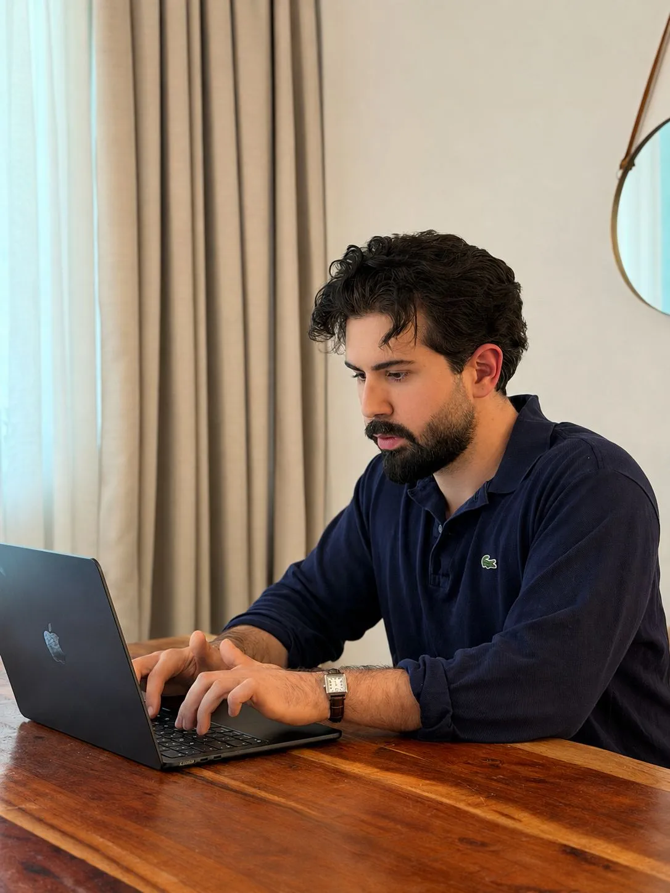
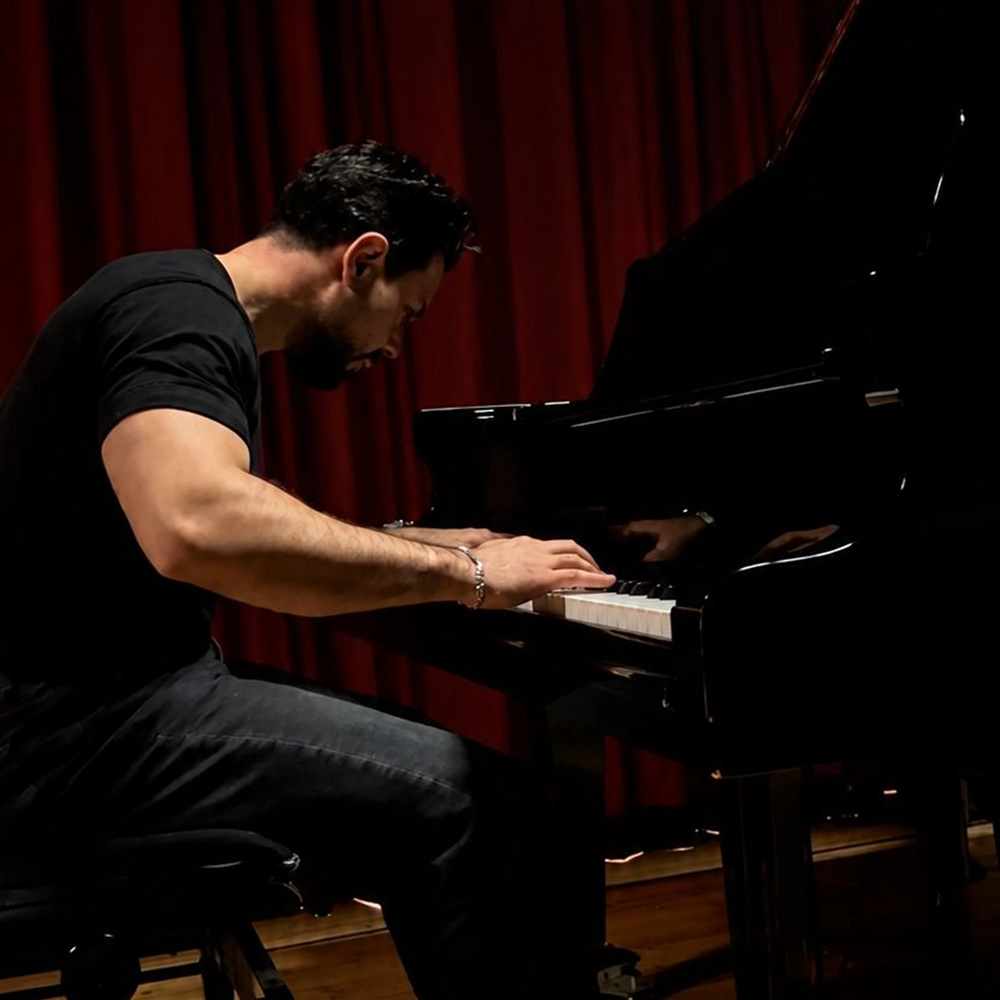
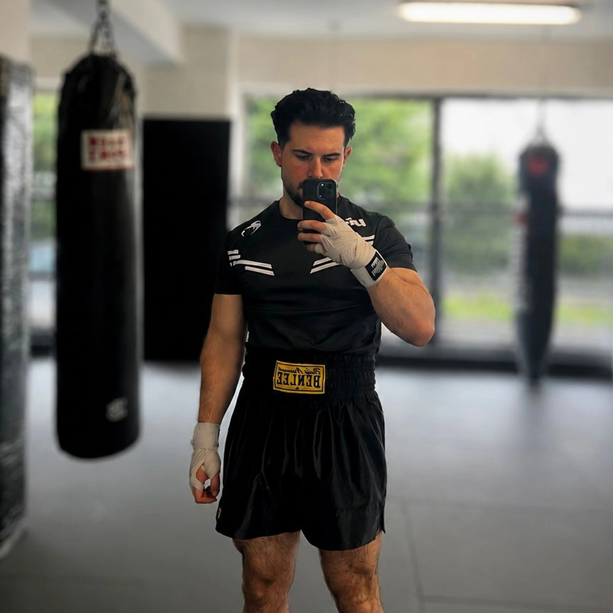
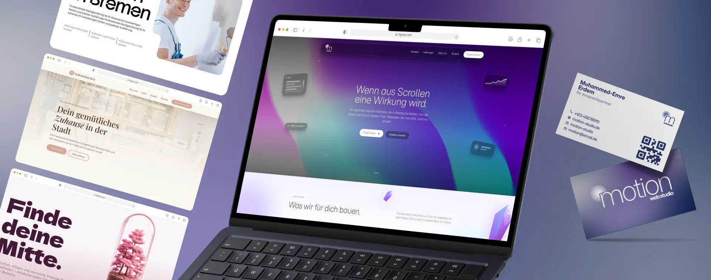
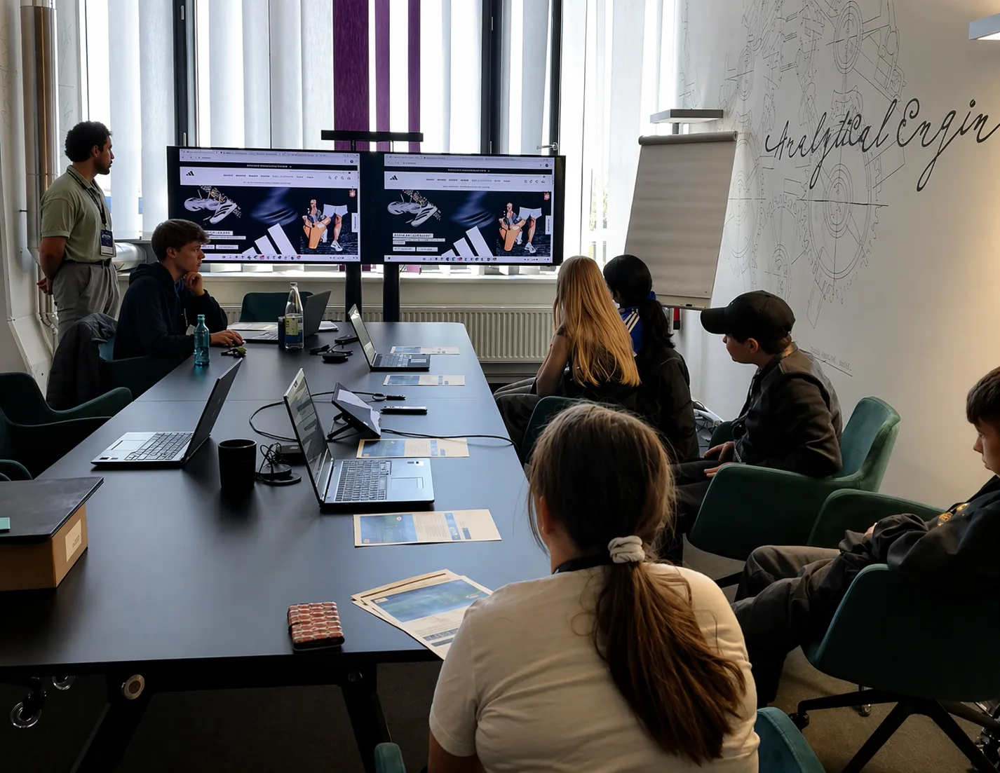

Portfolio · Über mich
Moin. Ich entwickle Webseiten, gestalte Interfaces und optimiere deren Performance, von der ersten Idee bis zur messbaren Conversion.
Über mich
Ich bin UX/UI Designer mit technischem Verständnis und Fokus auf Conversion-Optimierung. Durch meine Ausbildung bei team neusta und eigene Projekte habe ich gelernt, Nutzerbedürfnisse, Business-Ziele und technische Anforderungen zusammenzubringen.
Mein Schwerpunkt liegt auf der Gestaltung digitaler Produkte, die intuitiv nutzbar, technisch umsetzbar und auf messbare Ergebnisse ausgerichtet sind – von der ersten Idee über die Konzeption bis zur Optimierung.


Das Klavierspielen ist für mich ein Ausgleich zum digitalen Arbeiten. Seit über 15 Jahren spiele ich regelmäßig und nutze die Zeit bewusst, um den Kopf freizubekommen. Die Struktur und Präzision in der Musik spiegeln sich auch in meiner Arbeitsweise wider.
Boxen ist für mich mehr als Sport, es schult Fokus, Reaktionsvermögen und die Fähigkeit, auch unter Druck ruhig und strukturiert zu bleiben. Diese Disziplin überträgt sich direkt auf meinen Arbeitsalltag: klarer Kopf, konsequente Umsetzung, kein Ausweichen vor schwierigen Aufgaben.


motion ist meine eigene Webagentur, aktuell im Aufbau. In meiner Freizeit entwickle ich sie Schritt für Schritt weiter, als Plattform für eigene digitale Projekte und einen Raum, in dem Ideen direkt in umsetzbare Produkte übersetzt werden.
Im Rahmen meiner Ausbildung habe ich mehrfach am Zukunftstag teilgenommen und Schülern Einblicke in die Webentwicklung gegeben. Darüber hinaus war ich in Schulen unterwegs, um meinen Ausbildungsbetrieb zu repräsentieren. Komplexe Themen verständlich zu vermitteln und junge Menschen für digitale Berufe zu begeistern hat mir neben meiner regulären Arbeit großen Spaß bereitet.

Viele Designer entwerfen schöne Oberflächen. Ich entwerfe Lösungen, die funktionieren. Durch meine Erfahrung in der Entwicklung kenne ich die technische Seite und weiß, was machbar ist und was nur gut aussieht. Das spart Zeit, verhindert Missverständnisse und bringt Projekte schneller ins Ziel.
KI ist gekommen, um zu bleiben. Wer sie ignoriert, verliert den Anschluss und verschenkt enormes Potenzial. Für mich ist sie kein Ersatz für Kreativität, sondern ein Werkzeug, das Produktivität multipliziert. Gute Designer nutzen KI gezielt, schlechte verstecken sich dahinter.
Ich starte mit Verstehen, nicht mit Tools. Bevor irgendetwas entworfen wird, geht es darum, die eigentliche Absicht hinter dem Auftrag zu begreifen. Das gilt besonders wenn Auftraggeber keinen technischen Hintergrund mitbringen, denn die eigentliche Arbeit steckt im Zuhören und Nachfragen. Erst danach folgen Brainstorming, Intuition und viele Richtungen gleichzeitig. Struktur entsteht bei mir nicht am Anfang, sondern aus dem Prozess heraus.
Gutes Design löst ein konkretes Problem effizient und nachvollziehbar. Der Nutzer versteht die Struktur, trifft klare Entscheidungen und erreicht sein Ziel ohne Umwege. Für mich ist gutes UX/UI messbar, nicht nur visuell überzeugend.
Kritik ist kein Angriff, sondern eine weitere Perspektive auf dem Weg zum bestmöglichen Ergebnis. Ich nehme sie ernst, filtere was sinnvoll ist und setze es um. Ego hat im Designprozess nichts zu suchen.
Wenn die Augen von meinem Auftraggeber bei der Präsentation strahlen. Wenn du merkst, es hat Klick gemacht und das Ding sitzt einfach. Dieser Moment, wo aus „mal schauen" ein klares „genau das ist es" wird, das gibt mir alles.
Kontakt
Dir gefällt meine Arbeit? Ich freue mich auf den Austausch.